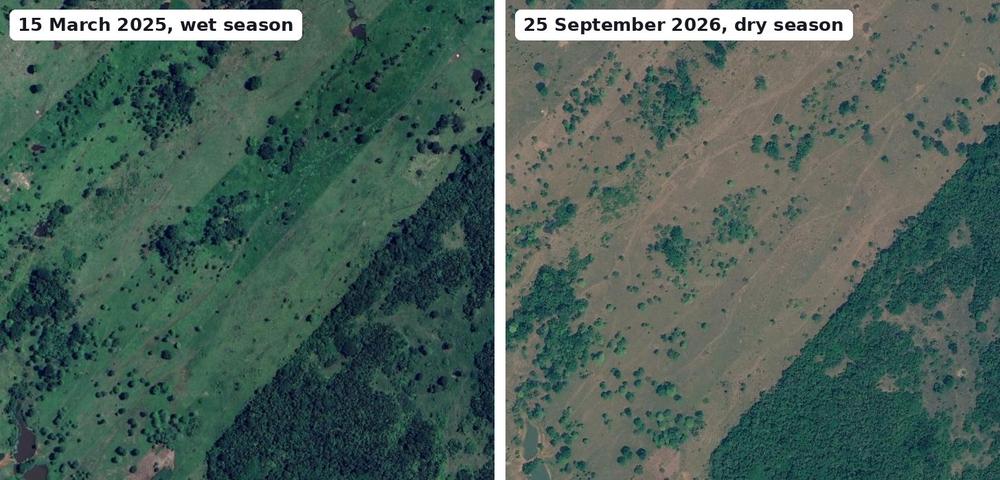
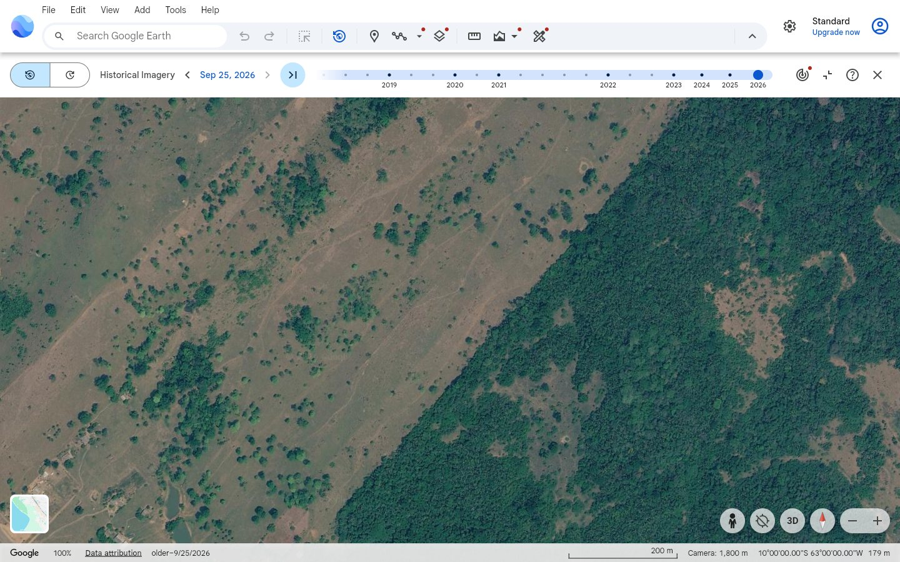
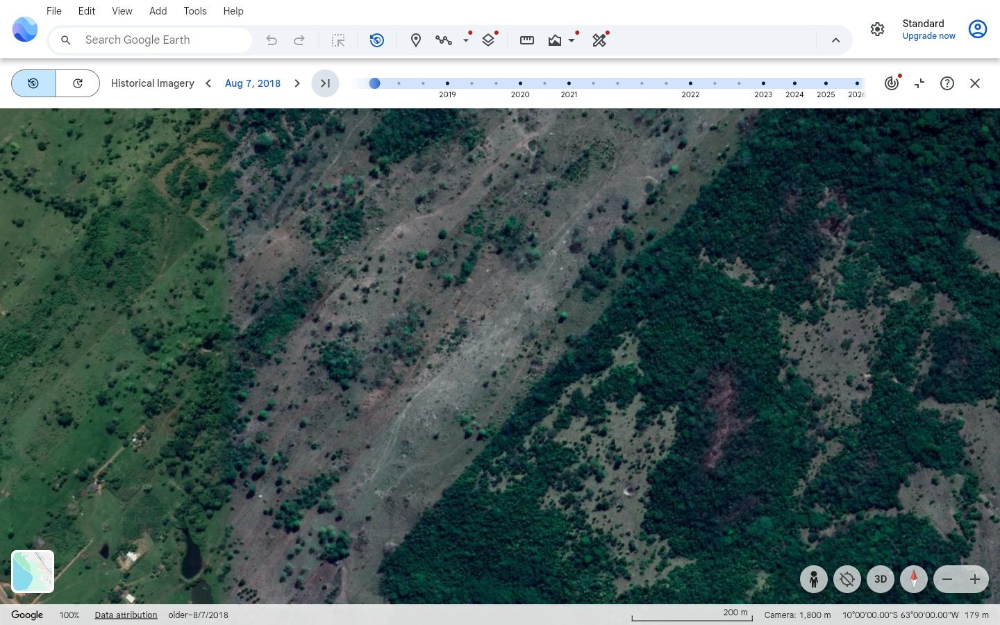
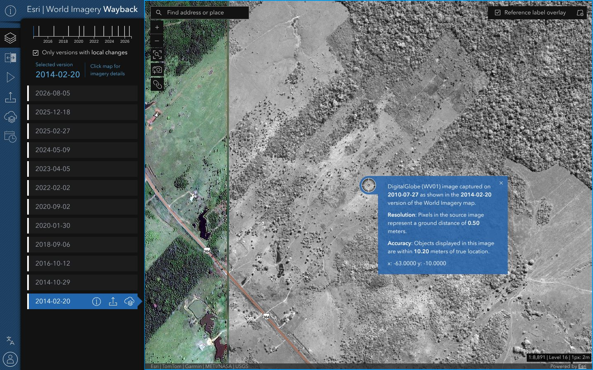

Reading land use change
A change of land use is rarely visible in one image. This guide shows how to put the evidence together on each plot: the very high resolution images of Google Earth Web and its history to see what is there and what was there, Collect Earth Explorer's time series to date the change, and ancillary data to explain it.
1. The approach
Assess each plot from what is certain to what is not: first the land as it is now, on the sharpest imagery; then the land at the start of the period; then, if the two differ, when and why it changed. No single source answers all three, so each answer rests on two or more sources that agree.
- Now. The land cover and land use today, on very high resolution (VHR) imagery: Google Earth Web, where you can tell trees, crops, buildings and bare soil apart.
- Then. The same plot at the survey's reference date, on the historical VHR images of Google Earth Web, ESRI Wayback or Planet; before those, on Landsat in Explorer.
- When. If then and now differ, the year of the change, from Explorer's time series (Landsat since 1984, Sentinel-2 since 2016), checked on the images just before and after.
- Why. What the change was: clearing, fire, flooding, a drought, a harvest followed by regrowth. Ancillary data (rainfall, burned area, radar, the seasonal cycle, the plot file's columns) tell them apart.
Your survey decides which of these it asks for (for example, the land use at the start and at the end of the period and the year of change). This guide is about finding the evidence, whatever the questions.
2. The sources and the years they cover
Pick the source by the date you need and the detail you need: VHR images show what is on the ground but are taken on few, irregular dates; satellite time series are coarser but cover every year.
| Source | Detail | Dates | Best for |
|---|---|---|---|
| Google Earth Web | Very high: single trees, fields, houses | The latest image; its history on a few dates, which vary by place | The land today; the land at past dates; counting trees |
| ESRI Wayback | Very high | Every version of Esri's World Imagery since 2014 | Another VHR date when Google Earth Web has none near the one you need |
| Planet (your own key) | About 3 to 5 m | Daily images, or monthly cloud-free mosaics of the tropics | Recent changes, dated to the month |
| Explorer: Landsat | 30 m: a 0.5 ha plot is about five pixels | Yearly composites and every scene since 1984 | Land use before VHR; dating a change by year |
| Explorer: Sentinel-2 | 10 m: a 0.5 ha plot is about 50 pixels | Composites since 2016, the last 12 months, every scene | Recent changes; the seasonal cycle of the plot |
| Explorer: Sentinel-1 radar | Yearly composites and every acquisition | Since 2015 | Places where clouds hide the optical images |
| Explorer: MODIS | 250 m, 16-day | Since 2000, with burned area | Fire, and the seasonal behaviour of the area |
| Explorer: CCDC | Landsat 7, 8 and 9 | Since 1999 | Breaks in the plot's history, found automatically |
| Explorer: rainfall | About 11 km, monthly | The whole period | Telling a drought from a land use change |
| Earth Map, Street View, the plot file | Maps, ground photos, columns | Varies | Context: climate, soil, elevation, existing maps, what it looks like from the road |
3. The land today
Start with the current image in Google Earth Web, which Collect Earth flies to with the plot's outline and sampling points drawn on it.
- Zoom out first. Look at a few hundred metres around the plot: the pattern of fields, the road, the river, the forest edge tell the land use better than the plot alone.
- Then zoom in and read the sampling points: trees, shrubs, crops, bare soil, water, buildings. Tree crowns cast shadows; crops sit in fields with straight edges; plantations stand in rows.
- Check the image's date. Google Earth Web shows it at the bottom of the window. The current image may be several years old in some places, and from a dry or a wet season. If it is old or unclear, the latest Sentinel-2 in Explorer (Sentinel-2, last 12 months) or Planet shows whether anything changed since.
- Land cover is not land use. A recently harvested forest with no trees is still forest land use if it will grow back; a field left fallow for a year is still cropland. Decide the use from the context and the history, not from the cover alone.


4. Going back in Google Earth Web
Google Earth Web keeps the earlier VHR images of most places. Open them with its Historical imagery control (Google's help):
- In the Google Earth Web toolbar, click Historical imagery, or View › Historical imagery. The base map must be Satellite.
- A bar opens under the toolbar: the date of the image shown, with Previous and Next arrows, and a timeline with a dot for each image of this place (larger dots mark the years). Click a dot, or step through the images with the arrows.
- Go to the image closest to your survey's reference date, then step forward image by image to see when the land changed between two of them.
- To come back to the latest image, click the button beside the arrows (Last page, ⇥); click Historical imagery again to close the timeline. While it is open, 3D buildings are switched off.

- Coverage varies. Some places have many dates, others one or two, and the dates differ from one area to the next. Note the date of the image you used.
- Neighbouring tiles can differ in date: half the plot may be on one image and half on another. Look at the seam before deciding that something changed.
- The history brackets the change: forest on the 2009 image and fields on the 2016 image say the change happened between those dates, not when. Explorer narrows it down (section 6).

5. Filling the gaps: Wayback and Planet
When Google Earth Web has no image near the date you need, the other VHR sources may have one. Switch them on in Collect Earth's Settings › Imagery (in a cloud project the coordinator does it); each opens on the plot with a button at the top of the panel.
- ESRI Wayback holds every version of Esri's World Imagery since 2014. Tick Only versions with local changes to list only the versions where the image of this place changed. A version's date is its release, not the date the image was taken: click the map for imagery details, which give the capture date, the satellite and the resolution. Older versions often hold images years older than their release.
- Planet, with your own key in Settings › Imagery › Planet API key: Daily images to see exactly when something happened, or Monthly mosaics, one cloud-free picture a month, to follow a change month by month.

6. Dating the change in Explorer
Collect Earth Explorer shows the plot on satellite imagery from Google Earth Engine, with charts of the plot over the years. It opens on each plot with the dates your project set, and already loads the next plot while you work.
The images
- The Layers panel lists the images: Sentinel-2 composites (the last 12 months, or a year since 2016), Landsat yearly composites since 1984, and Sentinel-1 radar since 2015. Each has a year slider and a band choice: True colour looks like a photograph; False colour (near infrared, shortwave infrared, red) shows dense forest in orange to red-brown, grassland and crops in yellow to yellow-green, and bare soil in pale green: it tells vegetation types apart better than true colour.
- Compare with puts a second layer beside the first, Left and Right: the plot in 2000 against 2020, for example. Between two images of the same sensor, Difference (NDVI change) colours the loss and the gain of vegetation.
- Click a point in a chart to see that scene on the map (Scene): the image behind an odd value.

The charts
The charts follow a vegetation index over time (NDVI by default: high for dense green vegetation, low for bare soil). A lasting drop means vegetation was removed; a slow rise means it grew back.
- Trend (on when the chart opens) tests whether the index rose or fell over the period, and says if it is significant. It needs 8 years of data.
- Change year finds the year where the yearly values shift most, with the median before and after. Compare years then shows the composites of the year before and after on the map, and, on Sentinel-2 charts, Compare scenes the least cloudy scene of the 3 months before and after; Scene before and Scene after show one image each. Look at them to confirm the change is real.
- Unusual values marks observations far below the usual for their month. A single mark is often cloud or shadow; a run of marks suggests a real drop.
- Seasonal profile shows the usual value for each month and one year drawn over it. A strong, regular swing is typical of crops or deciduous vegetation; a flat, high line of evergreen forest. A change of profile between years is a change of use.
- The cloud filter removes observations from cloudy scenes; Explain describes each analysis; Download CSV gives the values.
- CCDC fits segments to the plot's Landsat history (NDFI or NDVI): a break between segments marks a change, found without choosing dates.
A line above the charts sums up each series: the trend, a significant change year, and the date of the last image. Everything the Explorer shows, how to set it up and how to read each chart: Collect Earth Explorer.

7. Ancillary data
Ancillary data explain a change the images show, and stop a false one from being recorded.
| Question | Where to look |
|---|---|
| Was the drop a drought, not a clearing? | Explorer's rainfall chart, or Rain under the MODIS chart: a dry year lowers the index everywhere and it recovers; a clearing stays low whatever the rain |
| Was it a fire? | The MODIS chart marks burned months (MCD64A1). A fire followed by regrowth is not a change of land use |
| Clouds hide the optical images | Sentinel-1 radar layer and chart: radar sees through cloud; a clearing changes the backscatter |
| Crops, or natural vegetation? | The Seasonal profile, the field pattern on VHR, Street View photos from nearby roads (with their own history) |
| What does the area's context say? | The plot file's columns shown beside the plot (elevation, slope, climate, soil, ecological zone, district); Earth Map's layers and statistics for the area |
| What do existing maps say? | Earth Map or your project's extra map: national and global land cover maps, for comparison only; the imagery decides |

8. Deciding and recording
- Agreement of sources. Record a change when two independent sources agree: a VHR image before and after, and the time series showing when. One source alone is a doubt, not a change.
- Follow the definitions of the interpretation key word for word: thresholds of tree cover, height and area, and how temporary changes are treated.
- Persistence. A change of land use lasts. If the index drops and recovers within a year or two to the same seasonal pattern, it was a disturbance (a harvest, a fire, a drought), not a change of use.
- Say how sure you are, where the survey asks, and note the dates of the images you relied on when it has a field for it. Plots marked uncertain are the ones the reviewers look at first.
- When in doubt, ask. In a Mapathon, an expert in the room; in a cloud project, the team's guidance notes, where the rules agreed for hard cases are kept.
9. Common pitfalls
| Looks like | Often is | Check |
|---|---|---|
| Deforestation on a dry-season image | Deciduous forest without leaves | An image of the wet season; the Seasonal profile swings every year |
| A change between two VHR images | Two tiles of different dates, or a shift between images | The seam of the tiles; landmarks such as roads and houses |
| A sudden drop in a chart | Cloud or shadow missed by the mask | Unusual values: one mark or a run of marks; click the point to see the scene |
| Forest lost | A plantation harvested, to be replanted | The history: rows of trees before, regrowth after |
| Grassland turned to cropland | A fallow field cultivated again | The longer history: fields in earlier images |
| Vegetation loss across the area | A drought year | Rainfall; recovery the next year |
| No change in Landsat | A change smaller than its 30 m pixels | VHR and Sentinel-2 (10 m) |
| A change year on a slow trend | Gradual degradation or growth, not a single event | Look at Trend and Change year together |
10. An example
A plot that is now cropland, in a survey asking for the land use in 2000 and now, and the year of any change. The values are illustrative.
- Now: Google Earth Web shows fields with straight edges and scattered trees on their boundaries. The Sentinel-2 seasonal profile swings strongly every year: cropland.
- Then: Google Earth Web's history has an image from 2005 with closed tree crowns over the plot. The Landsat composite of 2000 in Explorer, in false colour, shows the plot in the same orange as the forest around it: forest in 2000.
- When: the Landsat NDVI chart drops and stays low; Change year says 2011, significant. Compare years shows forest in 2010 and bare soil in 2012. The history in Google Earth Web has no image between 2005 and 2016, which is consistent.
- Why: no burned month in the MODIS chart and normal rainfall in 2011: a clearing for agriculture, not a fire or a drought.
- Recorded: forest in 2000, cropland now, converted in 2011; sure, with the 2005 and current images and the Landsat change year as evidence.
A real plot: the one in the screenshots
The screenshots on this page show one place, at a forest edge in Rondônia, Brazil (10° S, 63° W), and it shows why the sources are used together:
- Now: Google Earth Web shows pasture with scattered trees beside the forest.
- Then, on VHR: Google Earth Web's history starts in August 2018, already pasture; Wayback's oldest version holds an image of July 2010, also pasture. No VHR image shows the land before it.
- When, on Landsat: Explorer's Landsat NDVI falls significantly over the period, with a significant change in 2005; comparing Landsat 2004 and 2006, and their NDVI difference, shows vegetation lost over the plot.
- So: the plot was most likely forest until about 2005 and pasture since. Only Landsat dates the change; the VHR images confirm the pasture from 2010 on. A survey asking for the land use in 2000 needs Landsat for that year here.
11. For organisers
- Choose the imagery for everyone in the dashboard's Setup › Plot layout & imagery: which windows open (Explorer, Earth Map, ESRI Wayback, Planet, an extra map), Explorer's dates, and its layers and charts (see setting up the Explorer), for example a Landsat chart of NBR for fire, a dry-season Sentinel-2 window, or the radar chart opened for cloudy regions. Preview tries it on a plot.
- Match the dates to the survey: the Explorer period should start before the survey's reference year, so the change year can be found.
- Build the interpretation key on this method: for each type of change in your area, a plot with its VHR before and after, its chart and the answer. Use them as the training plots of the Mapathon.
- Watch the hard cases in the dashboard: Mixed-up answers shows which classes the team confuses, often the pitfalls above; turn each settled case into a guidance note.